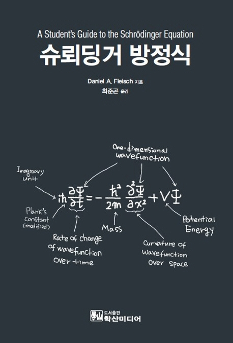

양자역학 추천도서

목 차
- 벡터와 함수
- 연산자와 고유함수
- 슈뢰딩거 방정식
- 슈뢰딩거 방정식 풀기
- 특정 퍼텐셜에 대한 풀이
본 저서를 추천하는 이유: 이 책은 아주(?) 친절한 데 수식이 갖는 의미를
자세히 설명하고 있다. 양자역학에는 수준 높은 수학이 사용되는데 본 책에
서는 필수적인 수학 내용들을 단원 앞부분에 정리했고, 그 내용들을 바탕으로
양자역학의 핵심인 슈뢰딩거 방정식에 대한 설명을 하고 있어서 양자역학을 공
부하고자 하는 학생들이 양자역학을 쉽게(?) 알 수 있을 것으로 기대된다.